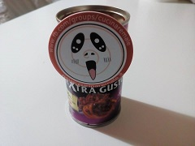
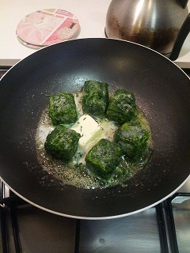

Vieni a trovarci sul primo, originale, unico, impareggiabile gruppo facebook
Questa è una raccolta di "cose" che riguardano cucinaremale che non sapevo bene dove collocare :). Visto che sono tante le persone che hanno dedicato tempo ed energie per scivere su di noi mi pareva giusto raccoglierli assieme. Se volete, invece, partecipare attivamente, venite a trovarci su facebook #cucinaremale. Vorrei non esseremi dimenticato di nessuno, ma so che l'ho fatto.. quindi se non vi trovate qui e sapete che dovreste esserci .. contattatemi tramite fb!
A memoria futura vogliamo ricordare la rarissima calamità di cucinaremale !! 
La cosa mi diverte abbastanza, è uscito quello che in efferri è il 2° libro ispirato da cucinaremale. Il titolo è "Cucinare (Male)" e potete acquistarlo su amazon. Un grazie agli autori che hanno avuto questa bella idea!
"L'articolo analizza le forme di rappresentazione e valorizzazione del cibo presenti all'interno del gruppo Facebook italiano 'cucinaremale'." Ringrazio Gabriele Marino che ha avuto il coraggio sceglierci per un lavoro universitario. Potete trovare l'articolo qui.
Ah! LA carta stampata, un interessante articolo sul gruppo stampato rilegato e spedito a tutti i lettori di "Donna moderna". L'articolo è disponibile alla pagina 45 tramite pressreader.
Su repubblica potete trovare un'interessante raccolta dei piatti più celebri del 2014, eravamo allora "solo" 1400
Visto il nome della rivista il solo fatto di essere stati presi in considerazione vale 1000 punti (a grifondoro) potete leggere l'articolo dell'amico Antonio Savarese direttamente sul sito foodmakers.
Un grazioso articolo scritto da Marta Migliardi sulle origini del gruppo pubblicato su ultimavoce.
Esilerante partecipazione alla trasmissione "Estate Fuorigioco" con ospiti contrapposti cucinaremale e Sonia Peronaci.
Eccola qui, penny , il nichelino di cucinaremale il primo post che , il 12 gennaio 2014, ha dato vita al gruppo! .
Ecco i nomi di alcuni gruppi creati da alcuni amici di cucinaremale: campeggiaremale, giardinaremale.